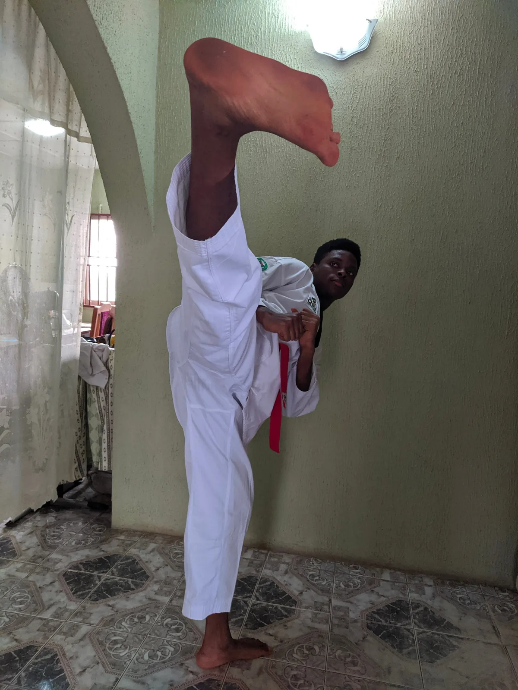
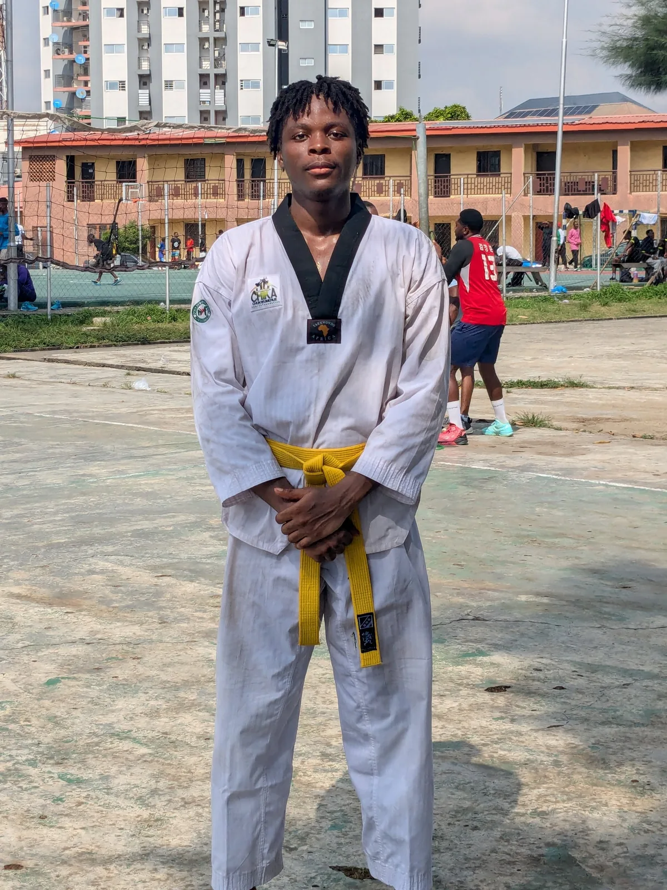
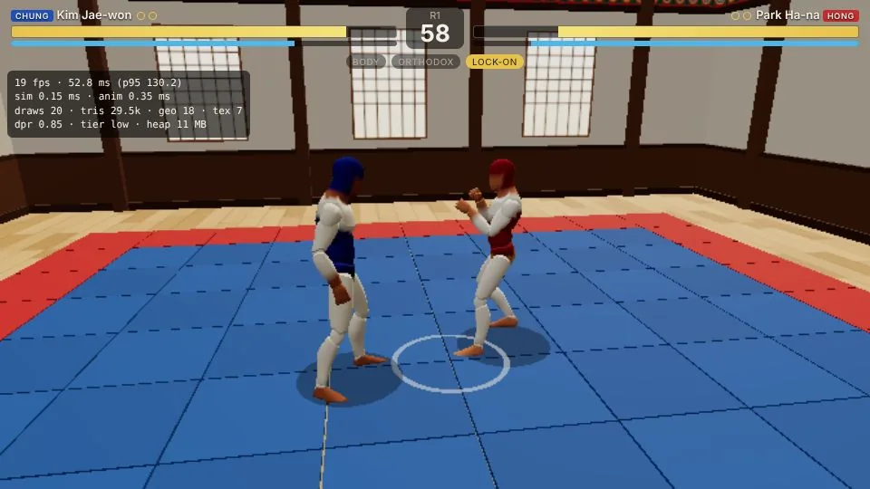
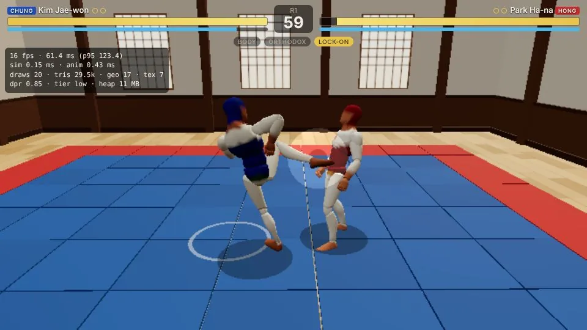

Making a Fighting Game Feel Right in the Browser
How $100 in expiring Claude credits turned into DOJANG, a playable 3D Taekwondo game, and the iterations that followed.
It started with $100 I didn’t want to waste
I had $100 in Claude credits that were about to expire.
There were about three or four days left to use them, and I figured I might as well build something rather than let them go to waste.
I’d already been thinking about experimenting with Three.js, 3D graphics, and interactive experiences in the browser. I had a few ideas, but nothing I’d committed to building yet.
I’ve also practised Taekwondo since 2015, when I started university. I haven’t been training as consistently in recent years, but it’s something I’ve enjoyed for a long time.
During a short brainstorming session, those two interests came together.
What if I built a 3D Taekwondo game that runs in the browser?
That’s how DOJANG started.


Training at home in 2020, and in my dobok in November 2025.
I wasn’t trying to build the next big fighting game. I wanted to explore an idea, see what was possible, and hopefully have something playable before those credits expired.
Getting the first version working
I approached DOJANG the same way I approach most of my projects: with a plan.
I started by working through the idea with ChatGPT. I had a vision for the game and gathered references of Taekwondo practitioners sparring, training halls, and the general atmosphere I wanted to create.
Once I was happy with the direction, I moved into implementation with Claude.
The first version was surprisingly promising.
I could move fighters around a 3D dojang, control the camera, throw kicks, and actually register hits. The playing area looked good, and the camera angles were already quite nice.
Of course, there were rough edges.
The characters looked somewhat like stick figures, their movements were stiff, and some of the kicks didn’t look quite right. But I wasn’t particularly concerned about those things yet.
I believe in iterating over time. I don’t believe in rushing things. Most things that are good, or, I believe most things take time to get right.
The important thing was that I had something working.
And now that I could actually play it, I had a much better idea of what needed improving.


The first version, on 1 November 2026: the fighters squaring up, then a roundhouse kick landing. The figures at the top left are the game’s performance readout.